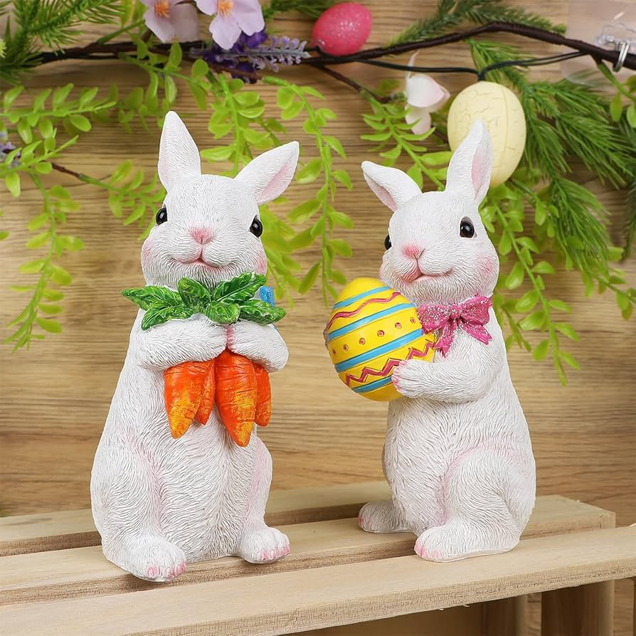
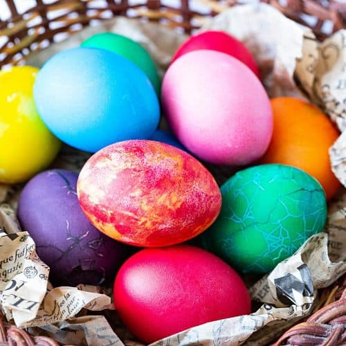

Sonka és tojás
A főtt sonka, a főtt tojás és a friss torma klasszikus húsvéti fogások. Gyakran kaláccsal vagy friss kenyérrel tálalják.
Színes tojások, vidám nyuszik, friss tavaszi illatok és családi együttlétek – ez mind a Húsvét.
Fedezd felA Húsvét a keresztény világ egyik legfontosabb ünnepe, Jézus feltámadásának emléknapja. A tavasz érkezésével együtt a megújulást, az újrakezdést és a reményt jelképezi.
A néphagyományban a Húsvét a tél elmúlását és a természet újjászületését is ünnepli. A tojás az életet, a nyúl a termékenységet, a zöld színek pedig a friss tavaszi természetet szimbolizálják.
A húsvéti asztal bőséges és színes – sós és édes finomságokkal.
A főtt sonka, a főtt tojás és a friss torma klasszikus húsvéti fogások. Gyakran kaláccsal vagy friss kenyérrel tálalják.
A foszlós, édes kalács a húsvéti reggeli egyik főszereplője. Gyakran fonott formában készül, vajjal, lekvárral fogyasztják.
Mézes, diós, mákos sütemények, nyuszis és tojás alakú kekszek díszítik az ünnepi asztalt, színes cukormázzal.
Friss zöldségek, újhagyma, retek és salátafélék hozzák el a tavasz ízeit a tányérra.
Magyarországon húsvéthétfőn a fiúk locsolóverssel és kölnivel (vagy vízzel) „öntözik meg” a lányokat, hogy egész évben frissek és egészségesek maradjanak.
A tojásfestés kreatív és közösségi program. Hagyományosan természetes festékekkel, viaszolással díszítették a tojásokat, ma pedig színes festékekkel, matricákkal, rajzokkal.
Színes tojások, nyuszik és tavaszi hangulat – inspiráció a dekorációhoz.

